class ListNode:
def __init__(self, x):
self.val = x
self.next = None
self.prev = None
def __str__(self):
if not self.next: return str(self.val)
else: return str(self.val) + " " + str(self.next)
def __repr__(self):
return self.__str__()
def __eq__(self,other):
return self.__str__() == other.__str__()
def oddEvenList(head):
if head is None or head.next is None :return head
mainhead=head # watchvar btree:prev:next:val mainhead
firsteven=head.next # watchvar ref:mainhead:btree head
c=1
prev=head # watchvar ref:mainhead:btree prev
while(head.next is not None):
n=head.next
prev=head
head.next=head.next.next
head=n
c+=1
if c%2:head.next=firsteven
else:prev.next=firsteven
return mainhead
def go():
# https://leetcode.com/problems/odd-even-linked-list/
a = ListNode(1)
b= ListNode(2)
c = ListNode(3)
d = ListNode(4)
a.next = b
b.next = c
c.next = d
oddEvenList(a)
Step:1,Line:28
Code executed:def go():
No Variable change detected in those marked for tracing
Step:2,Line:30
Code executed: a = ListNode(1)
No Variable change detected in those marked for tracing
Step:3,Line:2
Code executed: def __init__(self, x):
No Variable change detected in those marked for tracing
Step:4,Line:3
Code executed: self.val = x
No Variable change detected in those marked for tracing
Step:5,Line:4
Code executed: self.next = None
No Variable change detected in those marked for tracing
Step:6,Line:5
Code executed: self.prev = None
No Variable change detected in those marked for tracing
Step:7,Line:5
Code executed: self.prev = None
No Variable change detected in those marked for tracing
Step:8,Line:31
Code executed: b= ListNode(2)
No Variable change detected in those marked for tracing
Step:9,Line:2
Code executed: def __init__(self, x):
No Variable change detected in those marked for tracing
Step:10,Line:3
Code executed: self.val = x
No Variable change detected in those marked for tracing
Step:11,Line:4
Code executed: self.next = None
No Variable change detected in those marked for tracing
Step:12,Line:5
Code executed: self.prev = None
No Variable change detected in those marked for tracing
Step:13,Line:5
Code executed: self.prev = None
No Variable change detected in those marked for tracing
Step:14,Line:32
Code executed: c = ListNode(3)
No Variable change detected in those marked for tracing
Step:15,Line:2
Code executed: def __init__(self, x):
No Variable change detected in those marked for tracing
Step:16,Line:3
Code executed: self.val = x
No Variable change detected in those marked for tracing
Step:17,Line:4
Code executed: self.next = None
No Variable change detected in those marked for tracing
Step:18,Line:5
Code executed: self.prev = None
No Variable change detected in those marked for tracing
Step:19,Line:5
Code executed: self.prev = None
No Variable change detected in those marked for tracing
Step:20,Line:33
Code executed: d = ListNode(4)
No Variable change detected in those marked for tracing
Step:21,Line:2
Code executed: def __init__(self, x):
No Variable change detected in those marked for tracing
Step:22,Line:3
Code executed: self.val = x
No Variable change detected in those marked for tracing
Step:23,Line:4
Code executed: self.next = None
No Variable change detected in those marked for tracing
Step:24,Line:5
Code executed: self.prev = None
No Variable change detected in those marked for tracing
Step:25,Line:5
Code executed: self.prev = None
No Variable change detected in those marked for tracing
Step:26,Line:34
Code executed: a.next = b
No Variable change detected in those marked for tracing
Step:27,Line:35
Code executed: b.next = c
No Variable change detected in those marked for tracing
Step:28,Line:36
Code executed: c.next = d
No Variable change detected in those marked for tracing
Step:29,Line:37
Code executed: oddEvenList(a)
No Variable change detected in those marked for tracing
Step:30,Line:13
Code executed:def oddEvenList(head):
No Variable change detected in those marked for tracing
Step:31,Line:14
Code executed: if head is None or head.next is None :return head
No Variable change detected in those marked for tracing
Step:32,Line:15
Code executed: mainhead=head # watchvar btree:prev:next:val mainhead
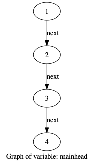
No Variable change detected in those marked for tracing
Step:33,Line:16
Code executed: firsteven=head.next # watchvar ref:mainhead:btree head
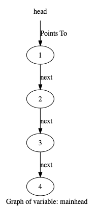
No Variable change detected in those marked for tracing
Step:34,Line:17
Code executed: c=1
No Variable change detected in those marked for tracing
Step:35,Line:18
Code executed: prev=head # watchvar ref:mainhead:btree prev
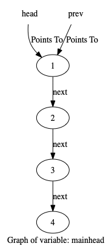
No Variable change detected in those marked for tracing
Step:36,Line:19
Code executed: while(head.next is not None):
No Variable change detected in those marked for tracing
Step:37,Line:20
Code executed: n=head.next

No Variable change detected in those marked for tracing
Step:38,Line:21
Code executed: prev=head

No Variable change detected in those marked for tracing
Step:39,Line:22
Code executed: head.next=head.next.next
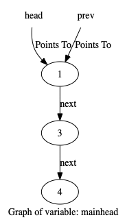
Variable head changed from 1 2 3 4 to 1 3 4
Variable prev changed from 1 2 3 4 to 1 3 4
Step:40,Line:23
Code executed: head=n
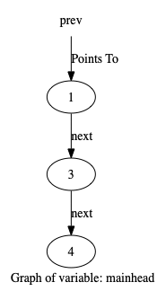
Variable head changed from 1 3 4 to 2 3 4
Step:41,Line:24
Code executed: c+=1
No Variable change detected in those marked for tracing
Step:42,Line:19
Code executed: while(head.next is not None):

No Variable change detected in those marked for tracing
Step:43,Line:20
Code executed: n=head.next

No Variable change detected in those marked for tracing
Step:44,Line:21
Code executed: prev=head
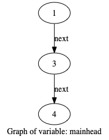
Variable prev changed from 1 3 4 to 2 3 4
Step:45,Line:22
Code executed: head.next=head.next.next
Variable head changed from 2 3 4 to 2 4
Variable prev changed from 2 3 4 to 2 4
Step:46,Line:23
Code executed: head=n
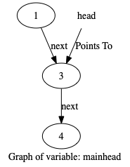
Variable head changed from 2 4 to 3 4
Step:47,Line:24
Code executed: c+=1
No Variable change detected in those marked for tracing
Step:48,Line:19
Code executed: while(head.next is not None):

No Variable change detected in those marked for tracing
Step:49,Line:20
Code executed: n=head.next

No Variable change detected in those marked for tracing
Step:50,Line:21
Code executed: prev=head
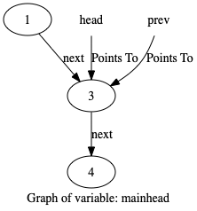
Variable prev changed from 2 4 to 3 4
Step:51,Line:22
Code executed: head.next=head.next.next
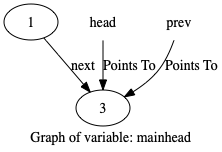
Variable head changed from 3 4 to 3
Variable prev changed from 3 4 to 3
Step:52,Line:23
Code executed: head=n
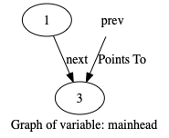
Variable head changed from 3 to 4
Step:53,Line:24
Code executed: c+=1

No Variable change detected in those marked for tracing
Step:54,Line:19
Code executed: while(head.next is not None):

No Variable change detected in those marked for tracing
Step:55,Line:25
Code executed: if c%2:head.next=firsteven
No Variable change detected in those marked for tracing
Step:56,Line:26
Code executed: else:prev.next=firsteven
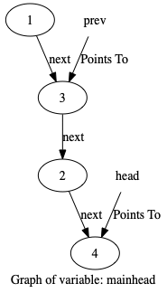
Variable prev changed from 3 to 3 2 4
Step:57,Line:27
Code executed: return mainhead
No Variable change detected in those marked for tracing
Step:58,Line:27
Code executed: return mainhead
No Variable change detected in those marked for tracing